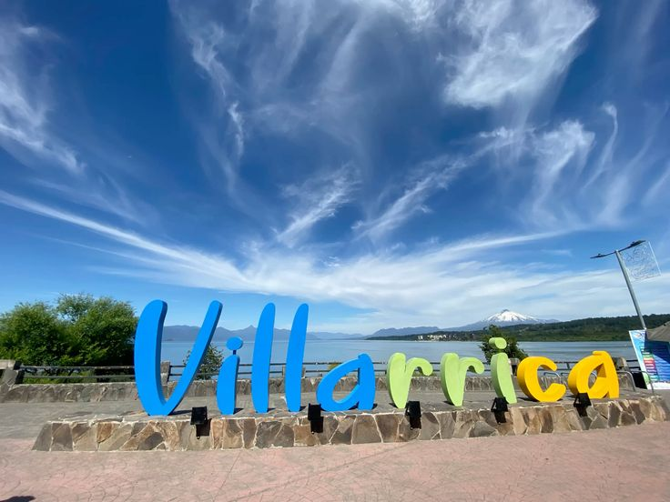
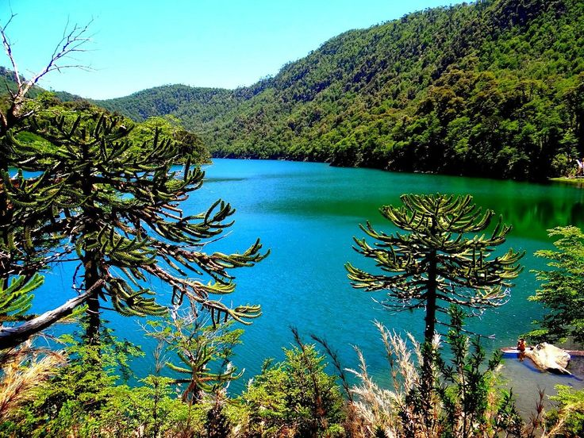
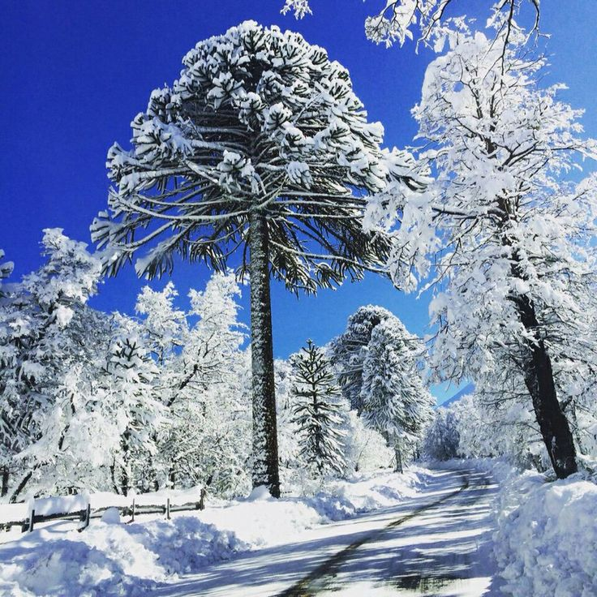
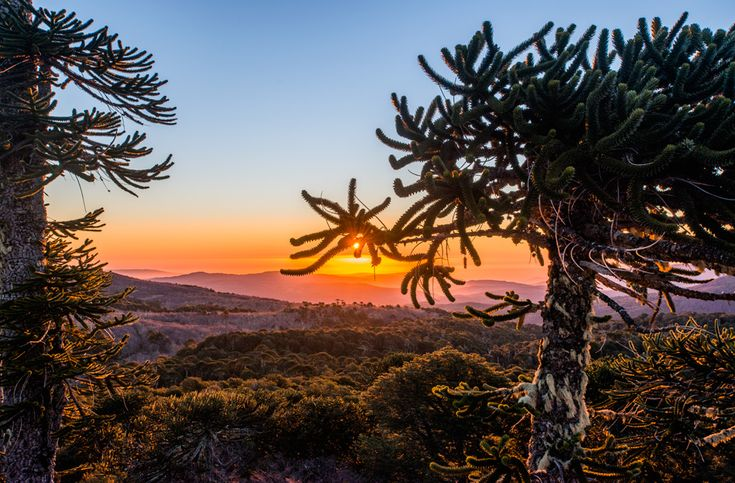
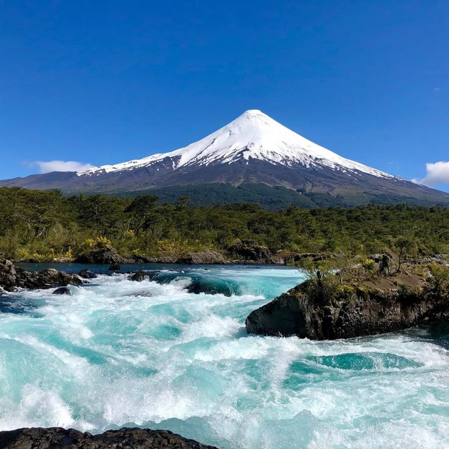
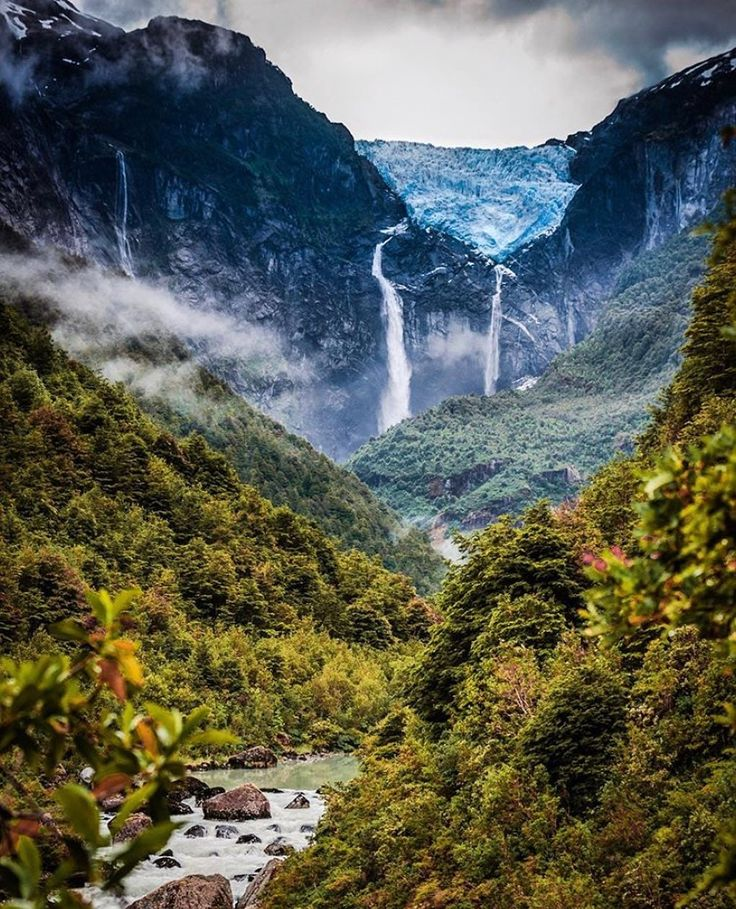
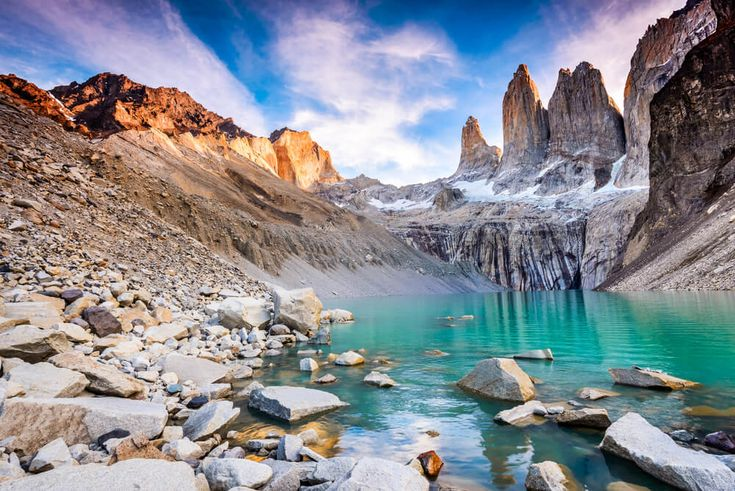

Sendero Ñielol
Naturaleza • Parque Ñielol, Temuco
Duración: 1 hr 30 min · Dificultad: Moderada
Turismo Sustentable en La Araucanía
Explora senderos, ferias agroecológicas y espacios patrimoniales diseñados para un turismo consciente y respetuoso con el medio ambiente.
Naturaleza • Parque Ñielol, Temuco
Duración: 1 hr 30 min · Dificultad: Moderada

Cultura • Av. Alemania 0842, Temuco
Horario: Martes a Domingo · Entrada liberada

Gastronomía • Feria Pinto, Temuco
Productos locales y orgánicos • Acceso libre

Naturaleza • Av. los Poetas, Temuco
Duración: 1-2 hrs · Dificultad: Fácil

Naturaleza • Melipeuco / Curacautín
Duración: Día completo · Dificultad: Moderada

Naturaleza • Pucón / Villarrica, La Araucanía
Duración: 4-5 hrs · Dificultad: Moderada

Naturaleza • Paillaco, Pucón
Duración: 5-6 hrs · Dificultad: Moderada

Naturaleza • Curacautín, La Araucanía
Duración: 3-4 hrs · Dificultad: Moderada

Naturaleza • Angol, Malleco
Duración: 2-3 hrs · Dificultad: Fácil

Naturaleza • Victoria / Curacautín
Duración: 3 hrs · Dificultad: Fácil

Naturaleza • San Pedro de Atacama, Antofagasta
Duración: 3-4 hrs · Dificultad: Fácil

Naturaleza • Olmué, Valparaíso
Duración: 4-5 hrs · Dificultad: Moderada

Naturaleza • Molina, Maule
Duración: 2-3 hrs · Dificultad: Fácil

Naturaleza • Puerto Varas, Los Lagos
Duración: 1 hr 30 min · Dificultad: Fácil

Naturaleza • Cucao, Chonchi, Los Lagos
Duración: 2 hrs · Dificultad: Fácil

Naturaleza • Puyuhuapi, Aysén
Duración: 3-4 hrs · Dificultad: Moderada

Naturaleza • Torres del Paine, Magallanes
Duración: Día completo · Dificultad: Alta

Gastronomía • Av. Arturo Prat, Valdivia, Los Ríos
Productos marinos y hortofrutícolas locales • Acceso libre